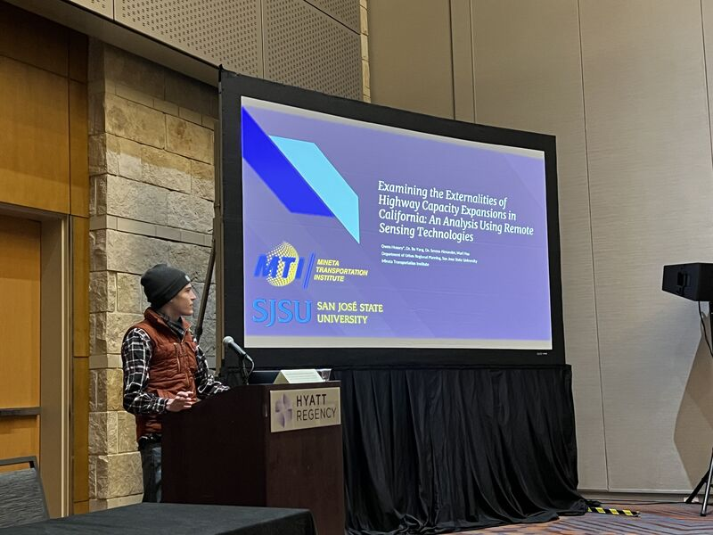

2 minutes read
Dr. Bo Yang, an Assistant Professor at San Jose State University, proudly showcases the exceptional representation of the university's COSS Department of Urban and Regional Planning at the AAG 2023 event in Denver. The diverse research exhibited by students and former alumni reflects the department's strong commitment to various domains.

Owen Hussey, a master's student, presented a compelling MTI project utilizing diverse remote sensing data to assess the environmental impact of highway expansions. Meanwhile, Xiangyu Ren, another graduate student, demonstrated STCokriging for crime prediction in San Jose, showcased at the GISS-SG Student Honors Paper Competition.
Former master's student My-Thu Tran, now a Ph.D. student at SDSU, unveiled research examining transportation's influence on the urban heat island effect during the COVID-19 lockdown. Tran also served as a panelist in the UAS symposium, presenting substantial findings.
Dr. Yang expresses immense pride in the students' remarkable research endeavors, signifying the department's dedication to fostering innovative and impactful studies. The commitment to research excellence extends beyond student work, promising forthcoming contributions from faculty members including Kathrine Richardson and Laxmi Ramasubramanian, PhD, AICP.
These presentations and contributions were supported by institutes like the Mineta Transportation Institute, SAVI - Spatial Analytics & Visualization Institute, SJSU GIS & Drone Society, and SJSU Research and Innovation. The showcased research spanned diverse domains such as GIS, urban planning, geography, and transportation, reaffirming the department's commitment to innovation and impactful research.
The event demonstrated the department's substantial contributions to advancing knowledge in various fields and highlighted the collaborative efforts of faculty and students toward pioneering research in urban and regional planning. The impactful insights shared by the students and alumni reflect the department's commitment to innovation and excellence in research and education.
Updated: March 24, 2023